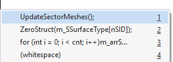

Multiple Clipboards
View multiple clipboards in a traditional paste menu with the default shortcut Ctrl+Shift+V. The second clipboard is always the default, so paste the copy-before-last with Ctrl+Shift+V, Enter.

Once pasted, a clipboard can be pasted additional times with Ctrl+V.
Learn more.